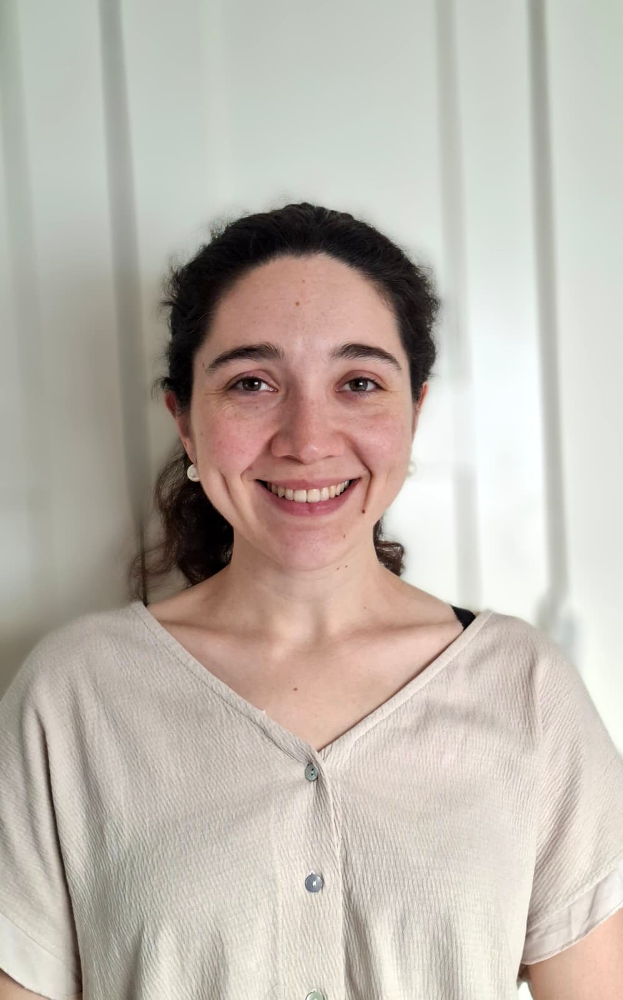

🙂
Aintzane Diaz-Mazkiaran
Postdoctoral Researcher
Jointly with Dr. Teresa Ezponda
Meet the researchers in the Machine Learning 4 Biomedicine Group.
Postdoctoral Researcher
Jointly with Dr. Teresa Ezponda
Postdoctoral Researcher
AECC Postdoctoral Fellow (Spanish National Cancer Association)
Postdoctoral Researcher
Junior Ramon y Cajal Fellow (Spanish National Career Award). Jointly with Prof. Idoia Ochoa.

PhD Student
La Caixa Fellow & National PhD Fellow (FPU). Jointly with Prof. Liewei Wang.
PhD Student
National PhD Fellow (FPU). Jointly with Dr. Juan Roberto Rodriguez-Madoz.
PhD Student
Ramon Areces PhD Fellow. Jointly with Dr. Ana Garcia-Osta and Prof. Idoia Ochoa.
PhD Student
Supported by the Riney Foundation.
PhD Student
Jointly with Prof. Idoia Ochoa.
PhD Student
Andia Scholarship, Gov. of Navarra. Jointly with Dr. Irene Ganan-Gomez.
PhD Student
Supported by a La Caixa Health Research Project. Jointly with Dr. Juan Roberto Rodriguez-Madoz.
PhD Student
Jointly with Dr. Teresa Ezponda.
PhD Student
PhD Student
Jointly with Dr. Marta M Alonso.
Master's Student
Former Postdoc
Now at National Center for Supercomputing Applications (NCSA), Urbana-Champaign, USA
Former Postdoc
Now at Universidad de la Republica, Uruguay
Former Postdoc
Now at Leibniz Universität Hannover, Germany
Former PhD Student
Now at Hospital Clinic in Barcelina, Spain. Before at KAUST, Saudi Arabia
Former PhD Student
Now at a quantitative trading start-up
Former PhD Student
Now at Clarivate

Former PhD Student
Now at MBZUAI, UAE